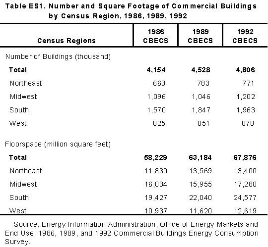

Overview
Percent of Buildings and Floorspace by Census Region, 1992


Executive Summary
Commercial Buildings Characteristics 1992 presents statistics about the number, type,
and size of commercial buildings in the United States as well as their energy-related
characteristics. These data are collected in the Commercial Buildings Energy Consumption
Survey (CBECS), a national survey of buildings in the commercial sector. The 1992 CBECS is
the fifth in a series conducted since 1979 by the Energy Information Administration.
Approximately 6,600 commercial buildings were surveyed, representing the characteristics and
energy consumption of 4.8 million commercial buildings and 67.9 billion square feet of
commercial floorspace nationwide. Overall, the amount of commercial floorspace in the United
States increased an average of 2.4 percent annually between 1989 and 1992, while the number of
commercial buildings increased an average of 2.0 percent annually.
Key Findings
- Energy Conservation: Overall, a buildings size, as
measured by floorspace, was the
overwhelming determinant in whether it practiced energy management or had some type of
conservation feature related to the building shell, the heating, ventilation, and air-conditioning
(HVAC) system or the lighting system. Larger buildings were more likely to have either
conservation features or practice energy management or both.
Building age was important for specific types of energy conservation such as the use of energy
management and control systems (EMCS) or lighting features; newer buildings were more likely
to have taken these measures. Building age, however, was less relevant for conservation efforts
related to the building shell, such as insulation and window treatments, since older buildings can
be retrofitted with these features relatively easily.
- Demand-Side Management (DSM): Knowledge of
utility-sponsored DSM
programs appears to be a key factor in whether a building participates in a program. While only
13 percent of the CBECS respondents reported an awareness of utility-sponsored DSM
programs, approximately one-third of those who were aware took part in them. However, it
should be noted that only 7 percent of all buildings participated in a DSM program. This
suggests that there is a large potential for energy savings in the commercial buildings sector
through DSM programs.
- New Office Buildings: Newer office buildings took
advantage of the more
energy-efficient lighting and HVAC systems in their construction. Analysis of office buildings
constructed after 1986 indicates that these buildings were three times more likely to use compact
fluorescent bulbs than office buildings constructed in 1986 or earlier. Newer office buildings
also reported the use of variable air-volume (VAV) systems on their heating or cooling units at
five times the rate of older office buildings. There was no statistically significant difference
between newer and older office buildings in the use of high-intensity discharge (HID) lights or
in regularly scheduled HVAC maintenance and repair programs. Approximately 70 percent of
all office buildings had regularly scheduled HVAC maintenance and repair programs.
- Government-Owned Buildings: The 1992 CBECS
shows that Government-owned
buildings were more likely to practice energy management than non-government-owned
buildings. Approximately 59 percent of government-owned buildings utilized one or more of the
following energy management practices: EMCS, DSM, energy audits, or building energy
managers.
- Main Heating Fuel: As a main heating fuel, natural
gas made inroads in newer buildings. The 1992 CBECS data show that the largest
percentage of commercial floorspace in buildings constructed in the 1980s
was primarily heated with electricity; however, the largest percentage of
floorspace in buildings constructed between 1990 and 1992 was primarily heated
with natural gas.
- Energy-Using Equipment: In 1992, more buildings
reported the use of packaged
cooling units and heat pumps, with a dramatic increase in the use of heat pumps in the West
Census Region.
Table ES1 provides national and Census regional-level commercial building counts and square
footage for the 1986, 1989, 1992 CBECS.

View and/or Print Full Report
 

File Last Modified: April 7, 1997
- Contact:
- Joelle Michaels
- joelle.michaels@eia.doe.gov
- CBECS Manager
-
URL: http://www.eia.gov/consumption/commercial/data/archive/cbecs/cbecs2d.html
If you are having any technical problems with this site, please contact the EIA Webmaster at
wmaster@eia.doe.gov
|